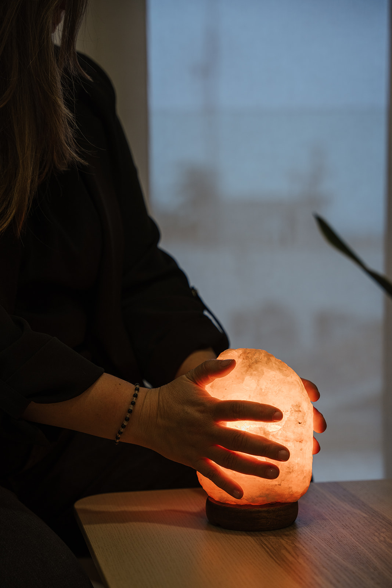

Una proposta formativa per comprendre com les emocions, les expectatives i les experiències del docent influeixen en la relació educativa.
Una proposta que dona veu al que passa per dins quan es tanca l’etapa de primària.
Programa d’educació emocional per a infants i adolescents.